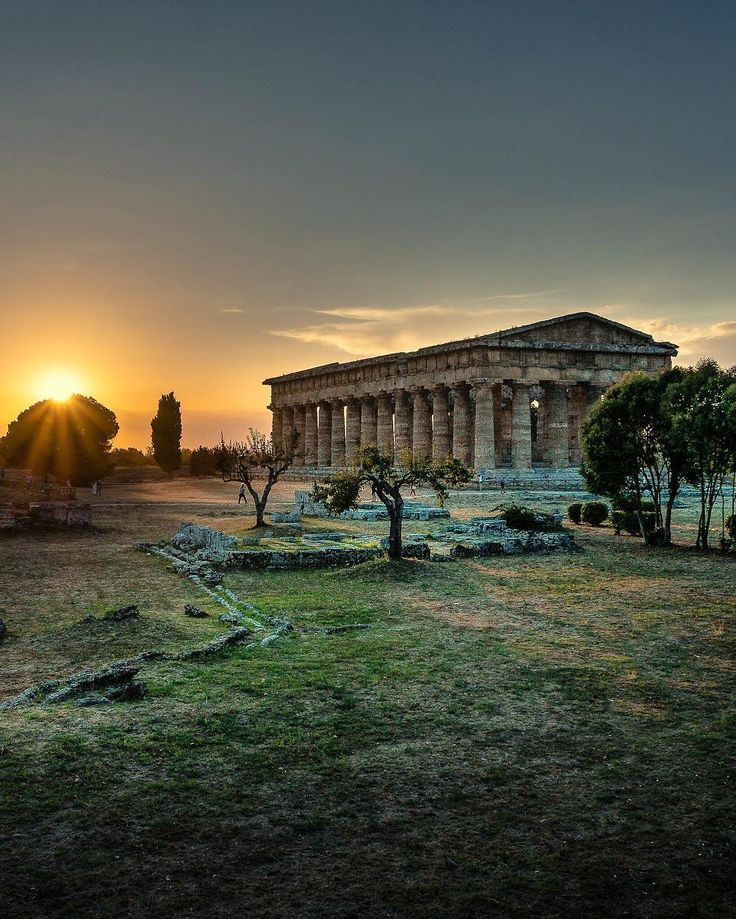

PAESTUM

Fondata dai Greci intorno al 600 a.C. con il nome di Poseidonia, Paestum è celebre per i suoi straordinari templi dorici perfettamente conservati. Passeggiando tra le rovine, si possono ammirare il Tempio di Hera, il Tempio di Nettuno e il Tempio di Atena, veri capolavori dell’architettura greca.
La città visse secoli di prosperità, diventando un importante centro commerciale e culturale, fino alla conquista romana. Oggi Paestum non è solo un sito archeologico: è un viaggio nella storia, nella mitologia e nell’arte dell’antica Grecia in Italia.